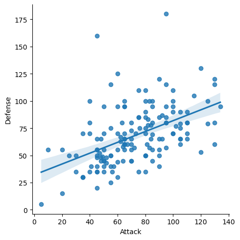
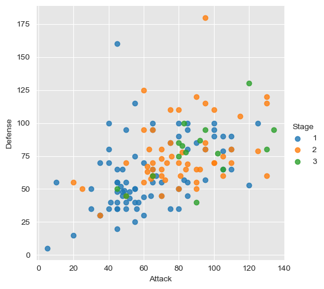
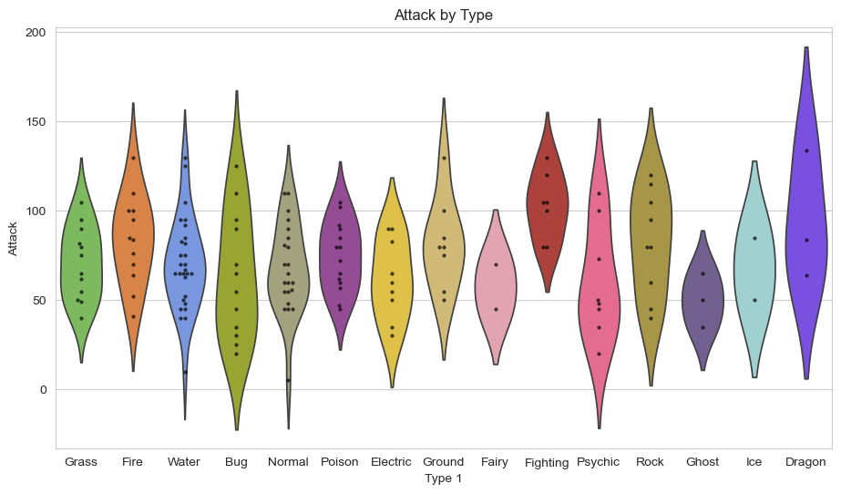
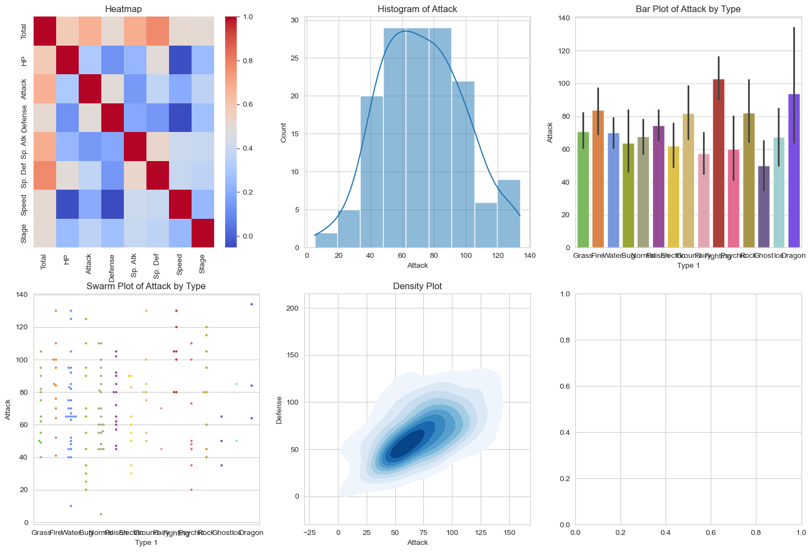

This week, we will be transitioning from Matplotlib and delving into our new topic of big data. Due to
our resource constraints, we cannot work with big data as it requires a large computer infrastructure.
Therefore, we will be simulating big data instead. We were introduced to the new topic of big data with
a tutorial on Seaborn. Seaborn is similar to Matplotlib, but it is more powerful. To effectively learn
Seaborn, it is helpful first to have a good grasp of Matplotlib, as it serves as the backbone of
Seaborn. Seaborn provides a high-level interface to Matplotlib, a powerful but sometimes unwieldy Python
visualisation library.
Before I could do anything, I first had to install everything. It was pretty simple. I followed the
tutorial
my teacher gave me. I also installed Seaborn using pip. I don't know if this helped, but it didn't break
it.
This allows me to use seaborn in a normal .py file rather than a .ipynb, which the tutorial tells me to
use.
The tutorial taught me how to use Jupyter Notebook to create visualisations with Seaborn. After
experimenting with it for a while, I discovered that if my main focus is exploring data and creating
visualisations with Seaborn, Jupyter Notebook might be more convenient for interactive data analysis and
visualisation. However, when I need a robust development environment with advanced coding features,
debugging, and version control, VSCode is a better choice for comprehensive development. With VSCode, I
can
integrate Jupyter. Using the Python extension, I can run Jupyter notebooks directly within VSCode,
combining
the best of both worlds. I am familiar with VSCode and prefer its feel, but I will work with Jupyter
Notebook to broaden my knowledge on this topic for learning purposes.
I made a simple plot using Seaborn in Jupyter Notebook to test if everything worked. This grabs a .csv
named Pokémon with all the data and plots it in a scatter plot. The .csv contains a list of Pokémon with
their attributes. The graph below plots each Pokémon based on its defence and attack stats.

Python
import pandas as PD
from matplotlib import pyplot as plt
%matplotlib inline
import seaborn as sns
# Read the CSV file into a DataFrame
df = PD.read_csv('Pokemon.csv', index_col=0, encoding='latin')
# Display the first 5 rows
df.head()
# Set the seaborn theme
sns.set_style("darkgrid", {"axes.facecolor": ".9"})
# Create a scatter plot with a linear regression model fit
sns.lmplot(x='Attack', y='Defense', data=df)
The graph shown above is not a traditional scatter plot because Seaborn does not have a dedicated scatter
plot function. As a workaround, I used Seaborn's function for fitting and plotting a regression line,
which resulted in the diagonal line you see. If I wanted to remove the regression line and create a more
standard scatter plot, I would need to adjust the 'lmplot()' function, resulting in a plot without the
regression line. the graph below demenstrates a scatter plot without a regrestion line.The new graph
also includes a new component that can be added to the scatter plot. This component is the hue set to
data, which allows for the representation of more data. In this case, the hue determines the 'stage' of
the pokemon, changing its colour on the scatter plot.

Python
sns.lmplot(x='Attack', y='Defense', data=df,
fit_reg=False, # No regression line
hue='Stage') # Colour by evolution stage
With the supplied .csv file full of data on Pokémon and their stats, the tutorial provides many examples
of how to display the data. I read through every example and further experimented with them to better
understand what was happening.
I could go through every concept, which would result in me pretty much writing the whole tutorial and
talking more about what I found. Instead, I decided to go through the tutorial by writing programs for
every example based on my experimentation. Then, I decided to create plots that would demonstrate what I
had learned in the shortest way possible.
Python
import pandas as pd
from matplotlib import pyplot as plt
import seaborn as sns
# Read the CSV file into a DataFrame
df = pd.read_csv('Pokemon.csv', index_col=0, encoding='latin')
# Display the first 5 rows
print(df.head())
# Set the seaborn theme
sns.set_style("darkgrid", {"axes.facecolor": ".9"})
# Step 5: Preprocess DataFrame
stats_df = df.drop(['Total', 'Stage', 'Legendary'], axis=1)
# Step 6: Set theme
sns.set_style('whitegrid')
# Step 7: Create custom color palette
pkmn_type_colors = ['#78C850', '#F08030', '#6890F0', '#A8B820', '#A8A878', '#A040A0', '#F8D030', '#E0C068', '#EE99AC', '#C03028', '#F85888', '#B8A038', '#705898', '#98D8D8', '#7038F8']
# Step 8: Overlaying Plots
plt.figure(figsize=(11,6))
sns.violinplot(x='Type 1', y='Attack', data=df, inner=None, hue='Type 1', palette=pkmn_type_colors, legend=False)
sns.swarmplot(x='Type 1', y='Attack', data=df, color='k', alpha=0.7, size=3)
plt.title('Attack by Type')
# Step 9: Putting It All Together
# Melt DataFrame
melted_df = pd.melt(stats_df, id_vars=["Name", "Type 1", "Type 2"], var_name="Stat")
# Swarmplot with melted_df
plt.figure(figsize=(14,8))
sns.swarmplot(x='Stat', y='value', hue='Type 1', data=melted_df, palette=pkmn_type_colors, size=3)
plt.title('Distribution of Stats by Pokémon Type')
# Step 10: Pokédex (Mini-Gallery)
fig, axes = plt.subplots(2, 3, figsize=(18, 12))
# Heatmap
numeric_df = df.select_dtypes(include=[float, int]) # Select only numeric columns
sns.heatmap(numeric_df.corr(), ax=axes[0, 0], cmap='coolwarm')
axes[0, 0].set_title('Heatmap')
# Histogram
sns.histplot(df['Attack'], kde=True, ax=axes[0, 1])
axes[0, 1].set_title('Histogram of Attack')
# Bar Plot
sns.barplot(x='Type 1', y='Attack', hue='Type 1', data=df, ax=axes[0, 2], palette=pkmn_type_colors, legend=False)
axes[0, 2].set_title('Bar Plot of Attack by Type')
# Swarm Plot
sns.swarmplot(x='Type 1', y='Attack', hue='Type 1', data=df, ax=axes[1, 0], palette=pkmn_type_colors, size=3, legend=False)
axes[1, 0].set_title('Swarm Plot of Attack by Type')
# Density Plot
sns.kdeplot(data=df, x='Attack', y='Defense', cmap='Blues', fill=True, ax=axes[1, 1])
axes[1, 1].set_title('Density Plot')
# Joint Distribution Plot
sns.jointplot(x='Attack', y='Defense', data=df, kind='hex', color='k')
plt.suptitle('Joint Distribution Plot', y=1.02)
plt.tight_layout()
plt.show()
The code above will display most of the tutorial content and generate multiple images. The first plot is
a violin plot with a swarm plot over the top. This plot shows how multiple plots can be layered to give
better information.

I also created a mini gallery of various plots to demonstrate different types of plots and how they can
be arranged in a grid to display graphs side by side.

What other possibilities can you think of for visualising data with Seaborn?
Other possibilities include creating interactive plots, combining multiple plot types, and using Seaborn
with other libraries for enhanced visualisations.
Did this week’s activities with Seaborn help you learn more than previous activities with Matplotlib?
Yes, this week’s activities with Seaborn helped me learn more because Seaborn builds on Matplotlib and
provides additional functionality, making it easier to create complex visualisations.
Why do you believe we’re studying big data and its simulation?
We are studying big data and its simulation to understand how to handle and analyse large datasets, which
is crucial in today’s data-driven world. Simulating big data allows us to practice and develop skills
without needing extensive resources.